Фродо и Сэма

Фродо с Сэмом продолжают свой опасный путь в Мордор.
Ночью они захватывают в плен преследовавшего их Голлума.
Фродо с Сэмом продолжают свой опасный путь в Мордор.
Ночью они захватывают в плен преследовавшего их Голлума.
(Этот персонаж был искусно создан при помощи компьютерной графики,
с голосом актёра Энди Сёркиса.) Терзаемый
раздвоением личности, он потайными тропами в Мордор ведёт туда Фродо и Сэма.
Узнайте историю Голлума
История Горлума
Голлум — выходец из речного народа, жившего у реки Андуин,
близкого по происхождению к хоббитам, в руки которого
однажды попало Кольцо Всевластия и подчинило себе его душу,
изменив до неузнаваемости его облик. Вся жизнь Голлума —
поиск Кольца и стремление завладеть им, что уже приводило
его в Мордор.
Судьба братства
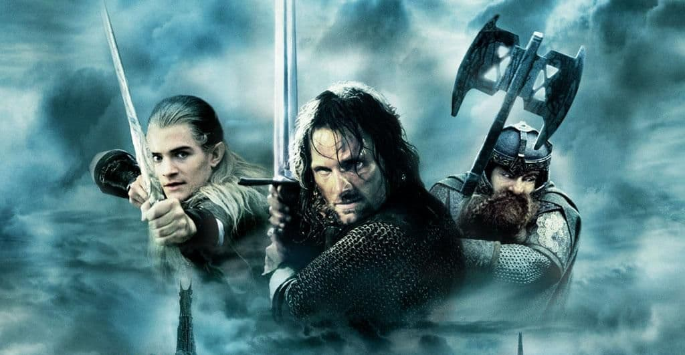
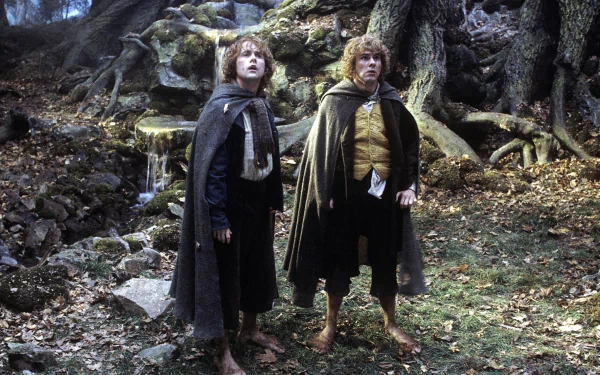
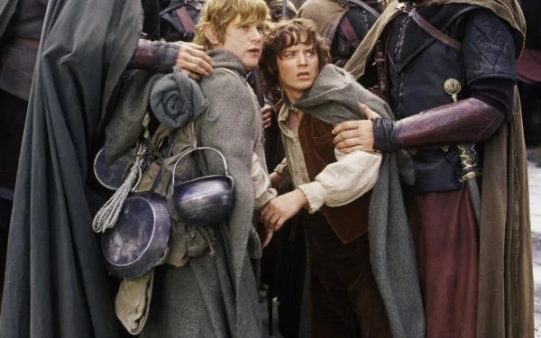
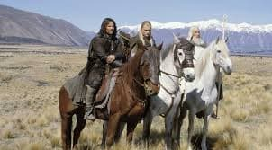
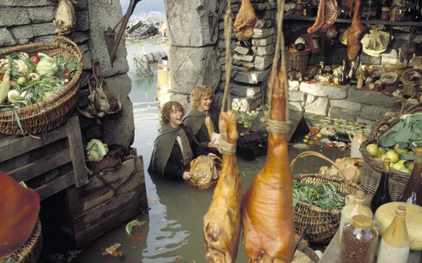
Выберите историю
- Арагорн
- Мерри
- Фродo
Хельмовa Падь
Саруман показывает Гриме «летучий порох» и посылает к Хорнбургу десятки тысяч урук-хай и дикарей Дунланда.
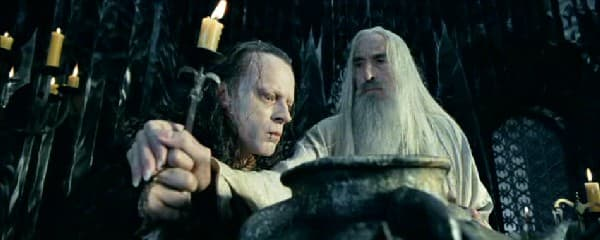
Но вначале отряд всадников — орков на волках-варгах под предводительством
Шарку по приказу Сарумана нападает на рохиррим. В результате племянница Теодена Эовин приводит людей
в крепость Хельмову Падь, а Теоден наносит поражение волчьим всадникам.
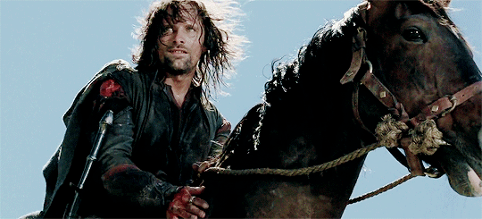
Король Рохана с победой является
в Хельмову Падь и укрепляет её стены. Однако победа омрачена тем, что во время боя Арагорн падает в реку
вместе с варгом орка и исчезает.
Арагорн
Тем не менее он выживает после боя и успевает прибыть в Хорнбург, заметив
перед этим десятитысячную армию Сарумана. На стенах Хельмовой Пади король Теоден отклоняет предложение
Арагорна насчет отправки за помощью в Гондор, а на раздаче людям оружия Леголас сомневается в счастливом исходе
дела.
Начало битвы
К стенам Хельмовой Пади подходит армия Сарумана и останавливается,
тем самым вызывая защитников крепости на бой.
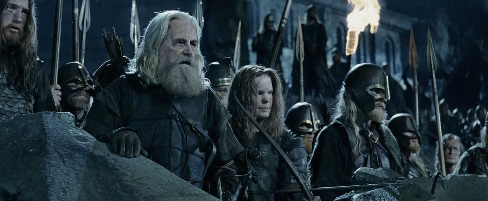Пожилой ополченец Рохана
выстрелом из лука убивает одного из орков, что провоцирует нападение урук-хаев
на крепость.
Тем самым разворачивается грандиозное сражение, в котором плечом к
плечу с людьми против войска орков бьются пришедшие на помощь эльфы-лучники Лотлориэна.
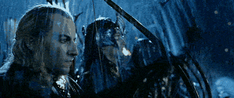
Однако урук-хаи взрывают часть крепостной стены с помощью «летучего пороха» и защитники Хорнбурга
вынуждены отступить в донжон.
На рассвете Арагорн советует Теодену совершить вылазку и она происходит
под звуки рога легендарного короля Рохана Хельма Молоторукого.
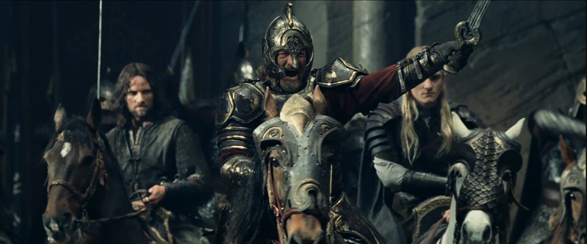 Одновременно Гэндальф Белый приводит на
помощь 2000 конных рохиррим под предводительством Эомера и те наносят массированный удар по полчищам
урук-хаев.Орки бегут вглубь леса, состоящего изХуорнов, и последние расправляются с ними. Битву при Хельмовой Пади выигрывают силы Света.
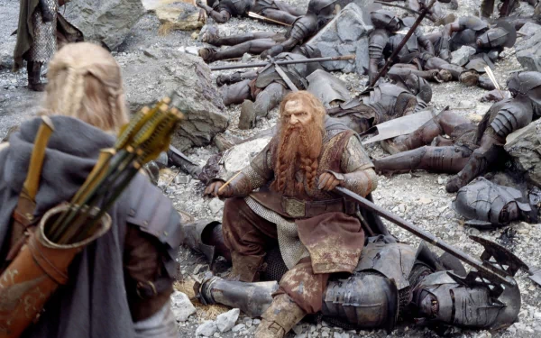
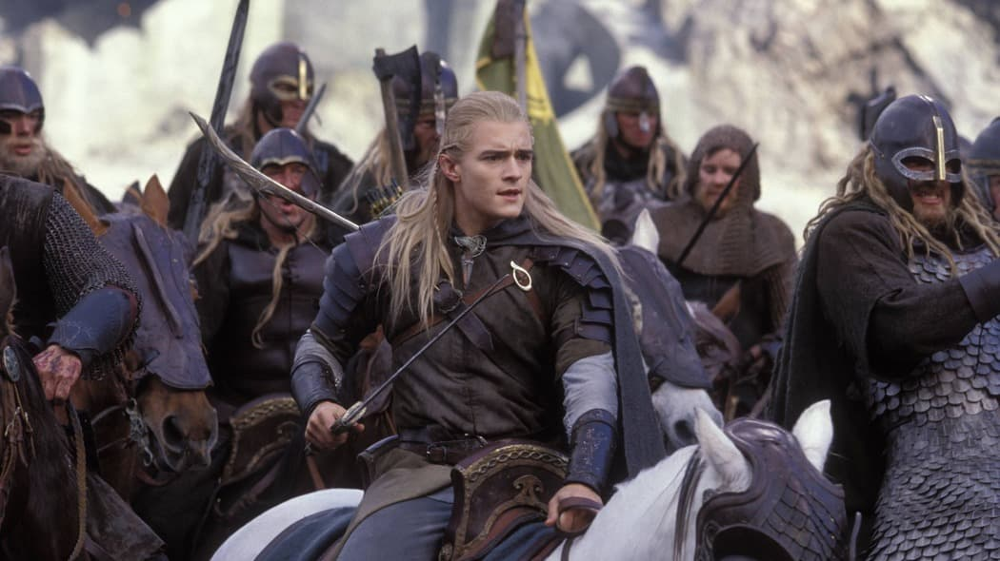
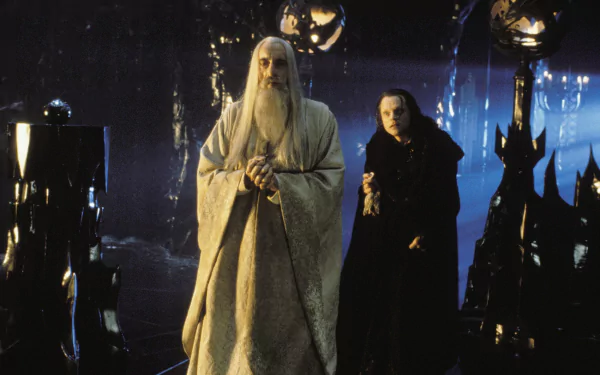